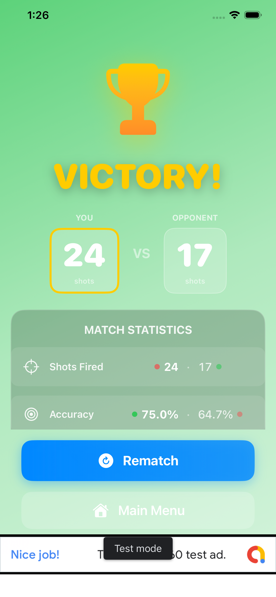

Your secret weapon when the sub is the last ship standing
Submarine Radar is a strategic power-up that activates when your opponent's submarine is the only remaining ship. It's the ultimate tool for finishing the match quickly and decisively—but you'll need to use it wisely.
The submarine is the smallest, sneakiest ship—just 1 cell. When it's isolated, finding it can take 10-20+ shots of blind guessing. Radar cuts that time in half by revealing which quadrant the submarine is hiding in, then unlocking 2 shots per turn for the rest of the match. Watch a quick ad at the start to unlock this game-changer.
At the start of each game, you'll be asked if you want to watch a short ad to unlock radar for that match.
When you've sunk all enemy ships except the submarine, the radar feature automatically activates (if unlocked).
The correct quadrant flashes orange 3 times, revealing where the submarine is hiding. You also get 2 shots per turn instead of 1.
Narrow your search to 25 cells (one quadrant). With 2 shots per turn, you'll find the sub 2× faster.
The 10×10 grid is divided into 4 quadrants. Radar reveals one:

🔥 Orange quadrant = Submarine is here (25 cells instead of 100)
Cut endgame time in half. No more endless blind guessing—finish strong.
The sub endgame can feel like luck. Radar gives you control back.
That orange flash + 2-shot mode feels like unlocking a superpower.
Submarine Radar is free—unlocked by watching a short video ad at the start of each match.
Before the game starts, choose to watch a 15-30 second video ad to unlock radar for that match.
No in-app purchases required. Every player has equal access to radar by watching ads.
Once unlocked, radar stays available for the entire game—activate it when the submarine is the last ship.
Q: Do I have to watch an ad every match?
No—you choose at the start of each game. Skip the ad and play without radar, or watch it to unlock radar for that match.
Q: Can I use radar if the submarine isn't the last ship?
No—radar only activates when the submarine is isolated. This keeps it balanced and strategic.
Q: Does my opponent know I unlocked radar?
No—radar is your secret. They won't see the quadrant flash or know you have 2-shot mode.
Q: What if I don't watch the ad?
You can still win without radar—it just takes longer to find the submarine. The game plays normally with 1 shot per turn.
Q: Does 2-shot mode work with the 3-miss rule?
No—radar mode replaces the 3-miss rule with a 2-shot-per-turn limit. Your turn ends after 2 shots, whether you hit or miss. Both shots count toward the limit.
Download Sea Grid Tactics™ and experience the strategic power of Submarine Radar.
Back to Main Page